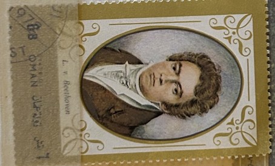
| SOURCE | TITLE| IMAGE MATCH | click to source page |
| www.allposters.com | Lugwig Van Beethoven (1770-1827) Engraved by Blasius ... | 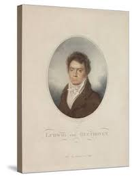 |
| www.dreamstime.com | Postage Stamp Printed in Cinderellas (Oman) Shows Ludwig Van ... | 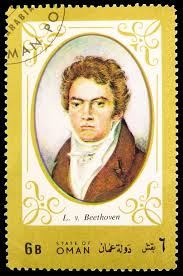 |
| www.mutualart.com | Blasius Höfel | Ludwig Van Beethoven (after. Louis Letronne ... | 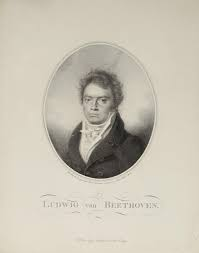 |
| bridgemanondemand.com | Profile Portrait Of Joseph Smith (1805-1844) American ... | 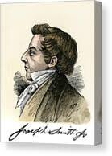 |
| www.beethoven.de | Ludwig van Beethoven - Lithographie, wohl von Henri Grevedon ... | 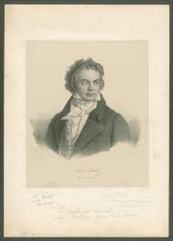 |
| www.ebay.com | ARTIST SIGNED 11 -BEETHOVEN, Bildnis Ludwigs van Beethoven ... | 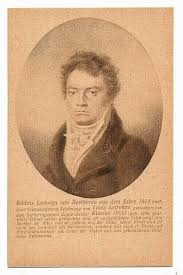 |
| www.mutualart.com | Blasius Höfel | Ludwig Van Beethoven (after. Louis Letronne ... | 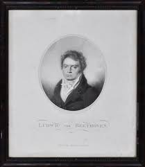 |
| www.northwindprints.com | Hand-colored Print of Joseph Smith's Profile with Autograph ... | 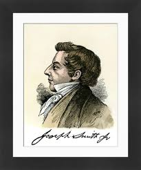 |
| www.art.com | Lugwig Van Beethoven (1770-1827) Engraved by Blasius Hofel ... | 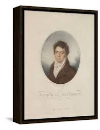 |
| www.lastdodo.com | Ludwig van Beethoven [1770-1827] Stamp catalogue - LastDodo | 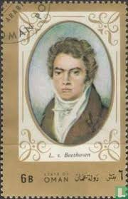 |
| www.abebooks.com | 289031,Künstler Ak Louis Letronne Bildnis Ludwig van ... | 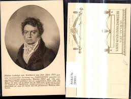 |
| nwcartographic.com | Portrait of Robert Fulton by: B. West P.R.A., 1856 – New ... | 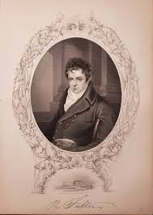 |
| www.nationalgalleries.org | Robert Southey, 1774 - 1843. Poet | National Galleries of ... | 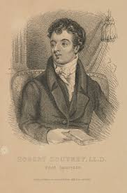 |
| www.etsy.com | Beethoven Portrait Print – Vintage Music Room Decor - Etsy ... | 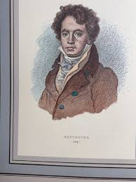 |
| www.northwindprints.com | Beethoven in 1812 Print - Digitally Colored Engraving. Art ... | 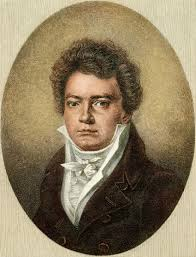 |
| www.abebooks.com | BYRON. Translated From The French By Hamish Miles by Maurois ... | 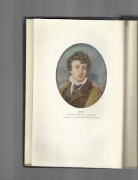 |
| paulinaspringsbooks.com | Jane Austen's Dowries & Dalliances by Samantha Hastings ... | 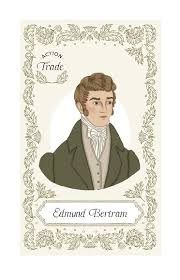 |
| en.wikipedia.org | Mathieu Barathier - Wikipedia | 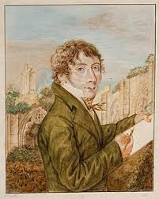 |
| commons.wikimedia.org | File:Josef Mayseder Litho.jpg - Wikimedia Commons | 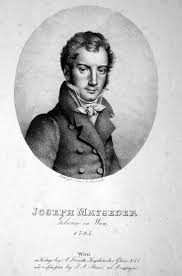 |
| www.invaluable.com | William Henry Haines Paintings & Artwork for Sale | William ... | 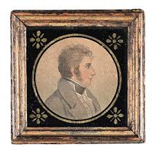 |
| www.worldpianonews.com | Beethoven's Broadwood Bicentenary: 1818-2018 - World Piano News | 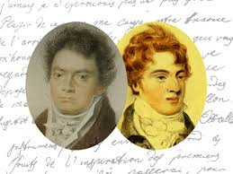 |
| www.mediastorehouse.com | Fine Art Print of Beethoven (Engraving, 1887). Art Prints ... | 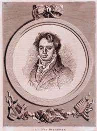 |
| picryl.com | Hoffmann, Reichsgraf von Hoffmannsegg, Johann Centurius ... | 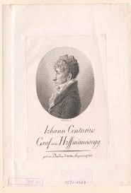 |
| en.wikipedia.org | Alexander Rae (actor) - Wikipedia | 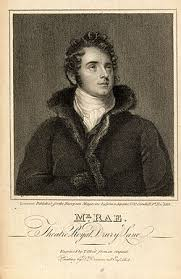 |
| www.oldeurope.lv | Beethoven - Old Europe Gallery | 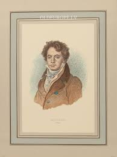 |
| alchetron.com | Wilhelm Müller - Alchetron, The Free Social Encyclopedia | 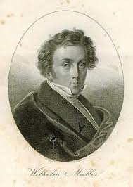 |
| www.ebay.com | 1814 2vols in 1 Lara, a Tale by Lord Byron and Jacqueline, a ... | 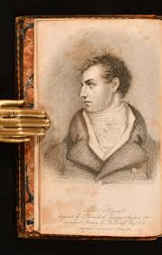 |
| www.sciencephoto.com | Ludwig van Beethoven, German composer, illustration - Stock ... | 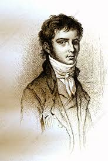 |
| www.findagrave.com | Wilhelm Muller (1794-1827) - Find a Grave Memorial | 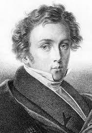 |
| www.reddit.com | My attempt at painting Mr Darcy (by Colin Firth, my absolute ... | 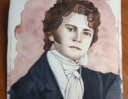 |
| www.nga.gov | William Armistead Burwell by Charles B. J. Févret de Saint ... | 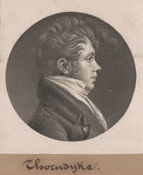 |
| www.alamy.com | Wilhelm schubert hi-res stock photography and images - Page ... | 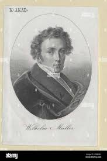 |
| www.dorotheum.com | Poststück - Partie Motivkarten Franz Schubert, - Motiv- und ... | 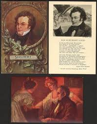 |
| www.etsy.com | Mr. Darcy / Colin Firth Print of Colored Pencil Drawing - Etsy | 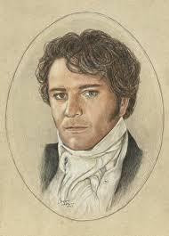 |
| www.pamono.com | Empire Period Artist, Portrait, 1800, Oil Painting, Framed ... | 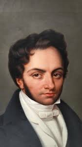 |
| prints.sciencesource.com | Johann Wolfgang Dobereiner, German Framed Print by Science ... | 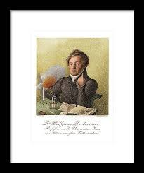 |
| www.pbfa.org | The Illustrated Byron With Upward of Two Hundred Engravings ... | 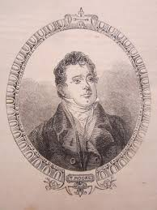 |
| clutchcargolips.net | The Mysterious Small Portrait | Clutch Cargo Lips | 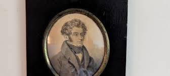 |
| www.art-prints-on-demand.com | Ludwig van Beethoven (1770-1827) engrave - Louis Rene ... | 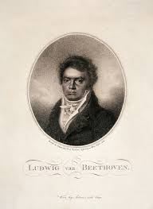 |
| www.pirages.com | THE LIFE, LETTERS, AND JOURNALS OF GEORGE TICKNOR | EXTRA ... | 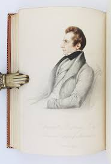 |
| sciencephotogallery.com | Biot Jean Baptiste, French Physicist. Wood Print by Sheila ... | 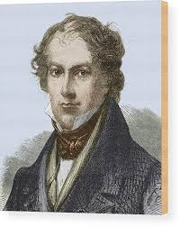 |
| nottinghammuseums.org.uk | Watercolour Portrait miniature of Lord Byron on ivory ... | 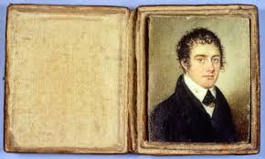 |
| www.mediastorehouse.com | 1888 Printers Sample for Worlds Inventors Souvenir Album ... | 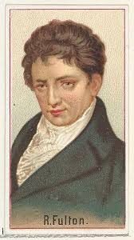 |
| www.magnoliabox.com | Portrait of Ludwig van Beethoven, ca 1820 posters & prints ... | 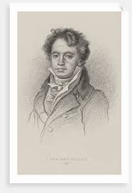 |
| en.wikipedia.org | Anselm Hüttenbrenner - Wikipedia | 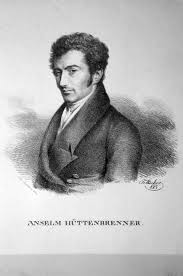 |
| www.bridgemanimages.com | Image of Portrait of Ludwig van Beethoven (engraving) by ... | 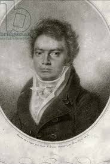 |
| www.iberlibro.com | Immagini della vita e dei tempi di Alessandro Manzoni ... | 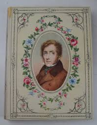 |
| www.amazon.com | The Art of Literature: Arthur Schopenhauer, T. Bailey ... | 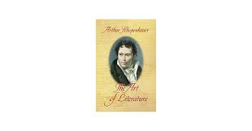 |
| www.posterazzi.com | Frederic Chopin (1810-1849). /Npolish Composer And Pianist ... | 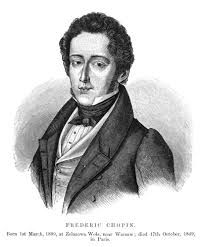 |
| www.beethoven.de | Ludwig van Beethoven - Porträtminiatur von Franz Wegeler ... | |
| posterchildprints.com | Found Art & Vintage Originals | One-of-a-Kind Artwork ... | |
| theidlewoman.net | Lafitte: Augustus Pugin – The Idle Woman | |
| www.augustachronicle.com | Monday Mystery: June 7, 2021, steamboat, Robert Fulton ... | |
| www.nga.gov | Sarah C. Conyers by Charles B. J. Févret de Saint-Mémin | |
| www.abebooks.co.uk | Immagini della vita e dei tempi di Alessandro Manzoni ... | |
| timelessmoon.getarchive.net | 31 Siegfried Detlev Bendixen Image: PICRYL - Public Domain ... | |
| www.artprice.com | Portrait miniature on ivory, 1820s by | Zéphirin BELLIARD ... | |
| www.thegatehousemuseum.com | Sykesville History | Gate House Museum | |
| www.ringnebula.com | Beethoven 1793 | |
| fineartamerica.com | Portrait of Italian opera composer Vincenzo Bellini -1801 ... |
{kind=link}